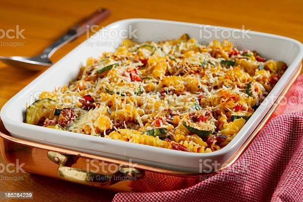

Back
Zucchini Casserole

Description
Roasted zucchini with onion and layered with marinara sauce and pasta. A meal-in-one with a salad and rolls. Can't get better than that! A great way to use up your zucchini crop in the summer.
Ingredients
- 3 medium zucchinis, sliced
- 2 medium onions, sliced
- 3 tbsp olive oil
- Salt and ground black pepper to taste
- 1 (16oz) package penne pasta
- 1 (28oz) jar marinara sauce
- 1/2 cup grate parmesan cheese
Directions
- Preheat oven to 400 degrees F (200 degrees C).
- Toss zucchinis and onions in a large bowl with olive oil until evenly coated. Spread vegetables into a large baking dish.
- Roast vegetables in the preheated oven until golden, about 30 minutes. Season with salt and pepper. Reduce oven heat to 350 degrees F (175 degrees C).
- Fill a large pot with lightly salted water and bring to a boil. Stir in penne and return to a boil. Cook pasta uncovered, stirring occasionally, until cooked through but still firm to the bite, about 11 minutes; drain.
- Lightly grease a 9x13-inch baking dish.
- Heat marinara sauce in a saucepan over medium heat until sauce is hot. Spread hot marinara sauce into the prepared baking dish, followed by penne pasta and zucchini mixture. Sprinkle Parmesan cheese atop vegetables.
- Bake in the preheated oven until sauce is bubbly, 35 to 40 minutes. Allow casserole to rest for 5 minutes before serving.